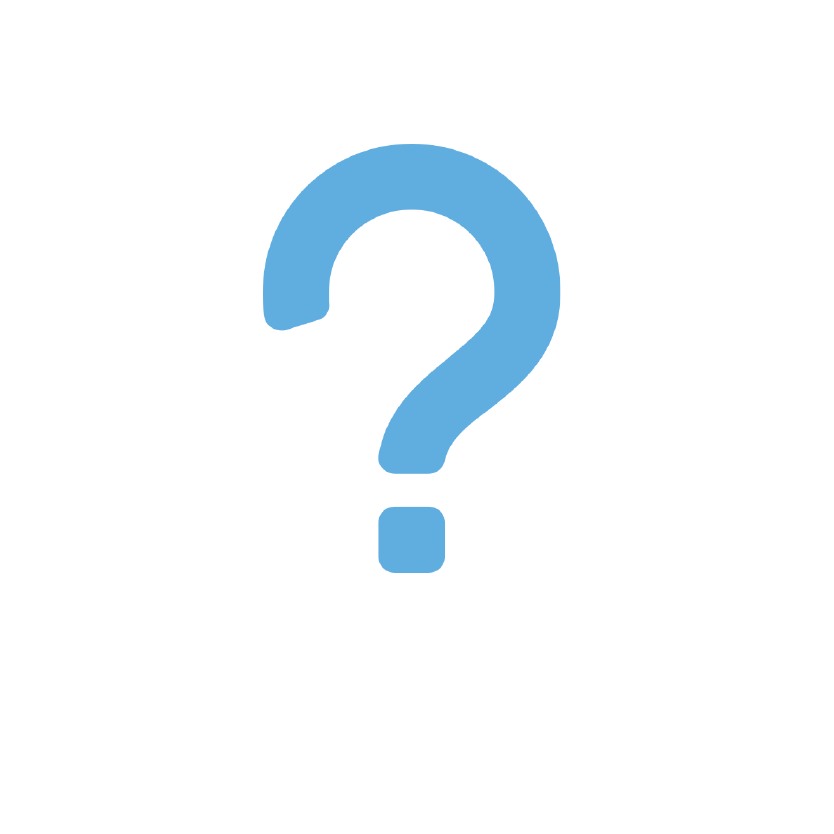
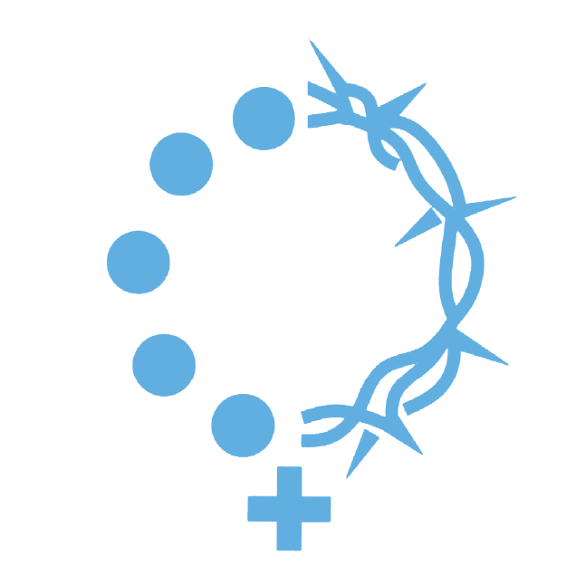

<!--
  Generated template for the ChapeletsPage page.

  See http://ionicframework.com/docs/components/#navigation for more info on
  Ionic pages and navigation.
-->
<ion-header>

  <ion-navbar>
    <ion-title>Chapelet</ion-title>
  </ion-navbar>

</ion-header>


<ion-content>
  <ion-list style="margin: 0;">

    <button
      ion-item
      [navPush]="chapeletPage"
    >
      
      <h2>A propos</h2>
    </button>
        <button
      ion-item
      [navPush]="chapeletGlorieux"
    >
      
      <h2>Chapelet glorieux</h2>
    </button>
    <button
      ion-item
      [navPush]="chapeletLumineux"
    >
      
      <h2>Chapelet lumineux</h2>
    </button>
    <button
      ion-item
      [navPush]="chapeletJoyeux"
    >
      
      <h2>Chapelet joyeux</h2>
    </button>
    <button
      ion-item
      [navPush]="chapeletDouloureux"
    >
      
      <h2>Chapelet douloureux</h2>
    </button>

  </ion-list>

</ion-content>
